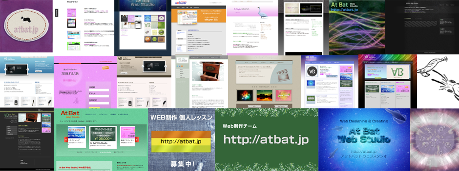

ギャラリー
パープルを基調にしたシンプルなデザイン。
ライトブルーを基調にしたシンプルなデザイン。
グリーンを基調にしたレトロチックなデザイン。
Webクリエーター
カヤックフィッシング、木工、草野球、そしてMacが大好きなWebクリエーターです。どうぞよろしくお願いします。

担当、得意分野
- Webサイト制作（デザイン、コーディング）
- Webアプリケーション制作（PHP, Ruby, iPhone/iPad用アプリ）
- コンピュータ、ネットワーク設定等全般
- OS：Mac, Windows, Linux
ソーシャルネットワーク